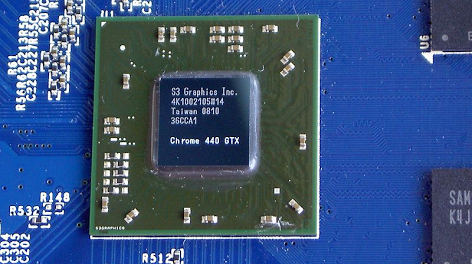

Chenggang Liu's Homepage
Research Interest
My life goal is to endow robots with the dexterity, robustness and autonomy of animals and humans and enable them to work in diverse fields such as human working&living environment and degraded environments. In practice, I'd like to design robots that can understand the tasks, the environment, and themselves; learn from humans and other creatures; and execute their tasks in such an elegant and efficient way that they can outperform their teachers.
Optimal control and reinforcement learning are the main focus of my research.
We begin not with a sensory stimulus, but with a sensorimotor co-ordination … In a certain sense it is the movement which is primary, and the sensation which is secondary, the movement of the body, head, and eye muscles determining the quality of what is experienced – Dewey, 1898
I believe perception, prediction and motion planning are tightly coupled with each other and we can't solve AI problems by regarding them as information processing problems, but instead, we need to have a physical robot and let it gain knowledge and intelligence from the interaction with the physical world.
The laws of movement and of rest deduced from this principle being precisely the same as those observed in nature, we can admire the application of it to all phenomena. The movement of animals, the vegetative growth of plants … are only its consequences; and the spectacle of the universe becomes so much the grander, so much more beautiful, the worthier of its Author, when one knows that a small number of laws, most wisely established, suffice for all movements. – Pierre Louis Maupertuis
Although full of chaos, the world is governed by optimality principle. The optimality is so ubiquitous that it remains central in thermodynamics, fluid mechanics, the theory of relativity, quantum mechanics, particle physics, string theory, optics, so and so. Thanks to mankind's great scientists, Isaac Newton, Leonhard Euler, Joseph-Louis Lagrange, Willian Rowan Hamilton, Lev Pontryagin, Richard Bellman, Carl Gustav Jacob Jacobi, and etc. , we have powerful mathematical weapons to formulate these problems and thanks to advanced hardware, we can solve these problems in our generation.
Blogs
Self-driving car technologies
Optimal control and planning
Emacs
Projects
Self-driving car
Self-driving car, Uber ATG, Pittsburgh, 2015-present
- System architecture and performance analysis
- Optimization-based motion planning and control
- Learning from imitation
DARPA Robotics Challenge Egress Control

The DARPA Robotics Challenge, Carnegie Mellon University, Pittsburgh, 2013-2015
- Full-body motion planning and control
- The egress task
Integrated Modular Avionics System

China's C919 project, GE Aviation and Aviage Systems, Ltd., 2011-2013
- Integrated Modular Avionics (IMA) system design
- High integrity ADN (Advanced Data Networks) design
- ADN switch configuration tool and analysis tool design
Biped Walking Control using an Optimal Trajectory Library

Control using an optimal trajectory library, PhD Thesis, SJTU, 2006-2011
- Trajectory-based dynamic programming
- Trajectory optimization and policy optimization
- Application to tasks with an equilibrium state (standing balance control)
- Application to tasks with a limit cycles (walking control)
Standing Balance Control using an Optimal Trajectory Library

Standing Balance Control Using an Optimal Trajectory Library
Roboray Humanoid Robot System Design

Roboray humanoid robot system development, Carnegie Mellon University, Samsung, Ltd. and SeeGrid, ltd.
- Sensor calibration
- Filter design
- Balance controller development
Biped Walking Control

Biped walking control, Shanghai Jiao Tong University, 2007
- ZMP-based walking control
- LIPM-based walking control
Biped Skating Control

Biped skating control, Shanghai Jiao Tong University, 2007
Small Humanoid Robot System Development

Small humanoid robot system development, Shanghai Jiao Tong University, 2006-2008
- Motion control system (HW/SW) design and implement
- ZMP-based walking control implement
Motor Control System Development

Motor control system development, Shanghai Jiao Tong University, 2007-2008
- 6 DoFs control (more DoFs than off-the-shelf products of the same size)
- High precision speed/position control
- 6 DoFs coupling control
Sensorimotor Coordination Research

Sensory-motor coordination research, Shanghai Jiao Tong University, 2006-2007
- Basic behavior acquisition with multisensor integration.
- This research enables a robot to emerge a behavior controller based on its interaction with the environment without specific programming.
GPU Design

Graphic Processing Unit logic design, S3 graphics, Inc., 2003-2006
- H.264 Video Decoder Development
- Multiple Graphic Processing Unit Support Techniques Development
- Bus Interface Development
Embedded Active Vision System Development

Active vision system development, Shanghai Jiao Tong University, 2001-2003
- Fast moving object tracking @ 50 Hz:
- Real-time image processing with TI C6000 floating point DSP
- Real-time display
- Real-time 2-DoFs pan-tilt camera system control
Short-term Ship Motion Prediction

Short-term ship pose prediction algorithm and software development, Harbin Engineering University and China Ship Scientific Research Center, 2001
Publications
Book Chapter
- Chapter 1: Trajectory-based dynamic programming, Christopher G. Atkeson and Chenggang LIU, Modeling, Simulation and Optimization of Bipedal Walking Cognitive Systems Monographs Volume 18, 2013, pp 1-15 DOI:10.1007/978-3-642-36368-91 pdf
Journal papers
- Team WPI-CMU: Achieving Reliable Humanoid Behavior in the DARPA Robotics Challenge Mathew DeDonato, Felipe Polido, Kevin Knoedler, Benzun PW Babu, Nandan Banerjee, Christoper P Bove, Xiongyi Cui, Ruixiang Du, Perry Franklin, Joshua P Graff, Peng He, Aaron Jaeger, Lening Li, Dmitry Berenson, Michael A Gennert, Siyuan Feng, Chenggang Liu, X Xinjilefu, Joohyung Kim, Christopher G Atkeson, Xianchao Long, Taskin Padir Journal of Field Robotics 34 (2), 381-399
- What Happened in the DARPA Robotics Challenge, and Why? C. G. Atkeso, B. P. W. Babu, N. Banerjee, D. Berenson, C. P. Bove, X. Cui, M. DeDonato, R. Du, S. Feng, P. Franklin, M. Gennert, J. P. Graff, P. He, A. Jaeger, J. Kim, K. Knoedler, L. Li, C. Liu, X. Long, T. Padir, F. Polido, G. G. Tighe, X. Xinjilefu, submitted to Journal of Field Robotics pdf
- Team WPI-CMU's Report from the DARPA Robotics Challenge Finals, Christopher G. Atkeson, Christoper P. Bov, Perry Franklin, Benzun P.W. Babu, Mathew DeDonato, Nandan Banerjee, Xiongyi Cui, Michael A. Gennert, Kevin Knoedler, Lening Li, Joshua P. Graff, Chenggang Liu, Ruixiang Du, Peng He, Xianchao Long, Dmitry Berenson, Siyuan Feng, Aaron Jaeger, Taskin Padir, Felipe Polido, X Xinjilefu, submitted to Journal of Field Robotics
- Biped walking control using a trajectory library Chenggang LIU, Christopher G. Atkeson, and Jianbo SU, Robotica, Volume 31 Issue 2, March 2013, Pages 311-322 Cambridge University Press New York, NY, USA DOI: 10.1017/S0263574712000203 pdf
- Neighboring optimal control for periodic tasks for systems with discontinuous dynamics Chenggang LIU, Christopher G. Atkeson, and Jianbo SU, SCIENCE CHINA Information Sciences, 2011, 54 (3): 653-663. DOI: 10.1007/s11432-011-4185-z pdf
- Basic Behavior Acquisition with Multisensor Integration for a Robot System Chenggang LIU and Jianbo SU, Advanced Robotics, 2009, 23 (12-13), 1561-1578. DOI: 10.1163/016918609X12496339824450 pdf
- Design and Implementation of Motor Control System for Small Humanoid Robot (in Chinese) ZHANG Yi, LIU Cheng-gang, XING Deng-peng COMPUTER ENGINEERING, 2009, 35(24)10.3969/j.issn.1000-3428.2009.24.082
- Step Motor Control Strategy in High Speed Pan/Tilt/Zoom Camera System (in Chinese) Chenggang LIU, Jianbo SU Electric Automation, 2002
- Calibration-Free Hand-Eye Coordination based on Coupled Auto-Disturbance Rejection Controller, Systems Engineering and Electronics, Vol.25(11), 2003, pp. 1385-1388 (In Chinese)
Conference papers
- Full-body motion planning and control for the car egress task of the DARPA robotics challenge, Chenggang LIU, C.G. Atkeson, Siyuan Feng, and Xinjilefu, Humanoids 2015, 3-5 Nov. 2015. DOI: 10.1109/HUMANOIDS.2015.7363583 pdf
- No falls, no resets: Reliable humanoid behavior in the DARPA robotics challenge, Atkeson, C.G, Babu, B.P.W, Banerjee, N., Berenson, D., Bove, C.P., Cui, X., DeDonato, M., Du, R., Feng, S., Franklin, P., Gennert, M., Graff, J.P., He, P., Jaeger, A., Kim, J., Knoedler, K., Li, L., Liu, C., Long, X., Padir, T., Polido, F., Tighe, G.G., and Xinjilefu, Humanoids 2015, 3-5 Nov. 2015. DOI: 10.1109/HUMANOIDS.2015.7363436 pdf
- Implementation of a trajectory library approach to controlling humanoid standing balance Chenggang LIU and Jianbo SU (2011), Systems, Man, and Cybernetics (SMC), 2011 IEEE International Conference on DOI: 10.1109/ICSMC.2011.6083884 pdf
- Biped walking control using offline and online optimization Chenggang LIU and Jianbo SU, China Control Conference (CCC), 2011 30th Chinese, 22-24 July 2011 pdf
- Standing Balance Control of a Humanoid Robot In the Presence of Continous Perturbations (in Chinese) Chenggang LIU and Jianbo SU, China Control Conference (CCC), 2011 30th Chinese, 22-24 July 2011 pdf
- Standing balance control using a trajectory library Chenggang LIU and Christopher G. Atkeson, Dynamic Walking, 2009.
- Standing balance control using a trajectory library Chenggang LIU and Christopher G. Atkeson(2009), IEEE/RSJ International Conference on Intelligent Robots and Systems, 2009, 3031-3036. 10.1109/IROS.2009.5354018 pdf
- Basic behavior acquisition based on multisensor integration of a robot head Chenggang LIU and Jianbo SU, IEEE International Conference on Robotics and Automation, 2008, 3094-3099. DOI: 10.1109/ROBOT.2008.4543681
Patents
- A general learning framework for event detection and classification for self-driving cars, Uber ATG, 2017
- Vehicle signaling device for self-driving cars, Uber ATG, 2016
- Camera System for Auto-detecting and Tracking Suspicious Subjects, ZL03116154.5 (Issued)
- Electric Wire Driven Actuator for Artificial Joint, ZL200710038296.6 (Issued)
- General Distributed Control System for Humanoid Robots, ZL200910054322.3 (Issued)
- Method and System for Multiple GPU Support, ZL200610128006.2 (Issued)
- Method and System for Multiple GPU Support, ZL200610110751.4 (Issued)
- Distributed Dual-bus Motion Control System for Humanoid Robots, 200810038844.X (Published)
- Method and System for Multiple GPU Support, US7325086 B2 (Issued)
- Switching Method and System for Multiple GPU Support, US7340557 B2 (Issued)
About

Contact: cgliu2008 [AT] gmail.com
This website is powered by Emacs org-mode and Bootstrap